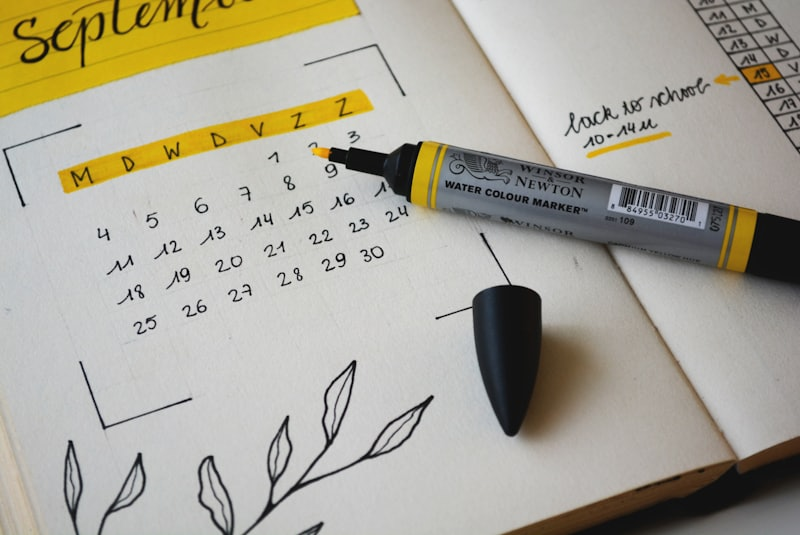

중1 때는 벼락치기로 됐는데 중2부터 안 되는 경우가 많습니다. 중2 내신과외를 시작하는 학생 상당수가 이 시점에 옵니다. 완산중학교처럼 학년이 올라가며 시험 범위가 넓어지는 학교에서는 며칠 몰아서 하는 방식이 물리적으로 불가능해집니다.
범위가 늘면 벼락치기는 산수로 안 됩니다
중1 시험 범위가 40쪽이었다면 중2는 70쪽이 넘습니다. 사흘에 40쪽은 되지만 70쪽은 안 됩니다. 공부 습관이 없어서가 아니라 계산이 안 맞는 것이고, 그래서 "더 열심히 하라"는 말로는 해결되지 않습니다.
평소 30분으로 바꾸는 법
- 그날 배운 것만 — 하루 30분, 그날 수업한 부분만 다시 봅니다. 예습은 나중입니다.
- 고정 시간 — "저녁 먹고 바로"처럼 시간을 정합니다. 마음먹기로는 안 됩니다.
- 표시만 하기 — 이해 안 된 곳에 표시만 해 두고 넘어갑니다. 30분을 넘기지 않습니다.
- 주말에 몰아 해결 — 한 주 동안 표시한 것만 주말에 채웁니다.
남은 기간 배분
이번 중간고사까지는 시간이 빠듯하니 평소 습관은 만들면서 시험 준비는 따로 가야 합니다.
- 1주차 — 하루 30분 복습을 시작하고 범위를 확인합니다
- 2주차 — 교과서와 필기를 훑으며 모르는 곳을 표시합니다
- 3주차 — 표시한 곳을 채우고 문제로 확인합니다
- 마지막 주 — 학교 기출과 오답만 반복합니다
💡 티칭코칭은 전북 전주 완산구 완산중학교 학생에게 맞춘 1:1 과외를 방문·화상으로 제공합니다. 내신은 평소 30분에서 갈립니다.
👉 완산중학교 학교별 과외 안내 · 전주 완산구 수학과외 선생님 · 전주 완산구 지역 과외 안내